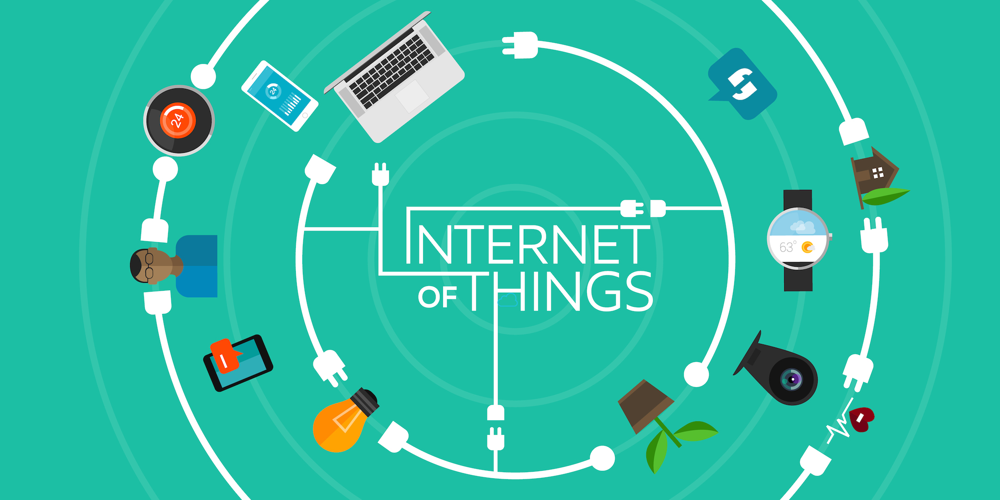

Sejarah Revolusi Industri
Revolusi Industri terjadi pada periode antara tahun 1760-1850 di
mana terjadinya perubahan secara besar-besaran di bidang pertanian,
manufaktur, pertambangan, transportasi, dan teknologi serta memiliki
dampak yang mendalam terhadap kondisi sosial, ekonomi, dan budaya di
dunia.[1] Revolusi ini menyebabkan terjadinya perkembangan
besar-besaran yang terjadi pada semua aspek kehidupan manusia.
Singkatnya, revolusi industri adalah masa pekerjaan manusia di
berbagai bidang mulai digantikan oleh mesin.[2][3] Revolusi Industri
dimulai dari Britania Raya dan kemudian menyebar ke seluruh Eropa
Barat, Amerika Utara, Jepang, dan menyebar ke seluruh dunia.[4]
Revolusi Industri menandai terjadinya titik balik besar dalam
sejarah dunia, hampir setiap aspek kehidupan sehari-hari dipengaruhi
oleh Revolusi Industri, khususnya dalam hal peningkatan pertumbuhan
penduduk dan pendapatan rata-rata yang berkelanjutan dan belum
pernah terjadi sebelumnya. Selama dua abad setelah Revolusi
Industri, rata-rata pendapatan perkapita negara-negara di dunia
meningkat lebih dari enam kali lipat. Seperti yang dinyatakan oleh
pemenang Hadiah Nobel, Robert Emerson Lucas, bahwa: "Untuk pertama
kalinya dalam sejarah, standar hidup rakyat biasa mengalami
pertumbuhan yang berkelanjutan. Perilaku ekonomi yang seperti ini
tidak pernah terjadi sebelumnya"
Pengertian Revolusi Industri
Definisi Revolusi Industri
revolusi industri adalah perubahan besar dan radikal terhadap cara
manusia memproduksi barang. Bila tadinya ada beberapa hal yang
semula begitu sulit, lama, mahal, maka dengan adanya revolusi
industri beberapa hal menjadi mudah, cepat, dan murah. Baca juga: 5
Negara dengan Populasi Terbanyak di Dunia, Indonesia Nomor Berapa?
Perubahan besar ini tercatat sudah terjadi tiga kali dan saat ini
kita sedang mengalami revolusi industri yang keempat. Setiap
perubahan besar ini selalu diikuti oleh perubahan besar dalam bidang
ekonomi, politik, bahkan militer dan budaya.
Maka tak heran bila kini ada pekerjaan lama yang menghilang, dan
jutaan pekerjaan baru yang muncul. Revolusi industri menghasilkan
penurunan, malah terkadang menghilangkan beberapa kelangkaan
tersebut, sehingga waktu, tenaga, dan uang yang semula digunakan
untuk mengatasi kelangkaan-kelangkaan tersebut mendadak bebas.
Hilangnya atau berkurangnya sebuah kelangkaan otomatis pada akhirnya
mengubah banyak aspek dalam kehidupan bermasyarakat.
Transformasi Digital
Berdasarkan Mckinsey pada tahun 2006, mempublikasikan data bahwa
revolusi digital saat ini didorong oleh empat tipe teknologi, yang
meski bukan inovasi baru, perkembangannya begitu pesat hingga
membawa dampak yang sangat besar bagi kehidupan masyarakat, Seperti:
Internet of Things (IoT)

Pada 2015, terdapat sebanyak 18,2 juta internet-connected devices.
pada 2020, jumlahnya meningkat menjadi 50 devices. Sensor yang
lebih murah, actuator yang lebih cepat, dan jaringan internet yang
semakin cepat dan luas. Dampaknya, akan bertumbuh jenis-jenis
bisnis, cara produksi, dan penerapan teknologi baru.
Big Data and Advanced Analytic

Pada 2016 saja, Traffic internet mencapai 1 Zettabyte- Ekuivalen
dengan data sebesar 1 Triliun gigabyte. Setiap detik terdapat
pertukaran informasi dan komputer dengan daya tinggi yang dapat
membantu manusia dalam proses pengambilan keputusan.
Mobile Internet
Ketersedian Telepon pintar telah mengambil alih peranan telepon
rumah atau gawai yang memakai fixed-line bagi masyarakat yang
mengakses internet. saat ini sekitar 60% lalu lintas internet
berasal dari telepon pintar.
cloud Computing

Jaringan Internet dan aksebilitas yang lebih cepar dan relatif
murah membawa dampak yang sangat besar bagi daerah-daerah yang
terpencil dan terisolasi. diawali pada 2014, untuk pertama kalinya
informasi dapat diproses tidak hanya melalui jaringan IT lama,
tetapi juga melalui Cloud.
1 / 3
Revolusi Industri
❮
❯